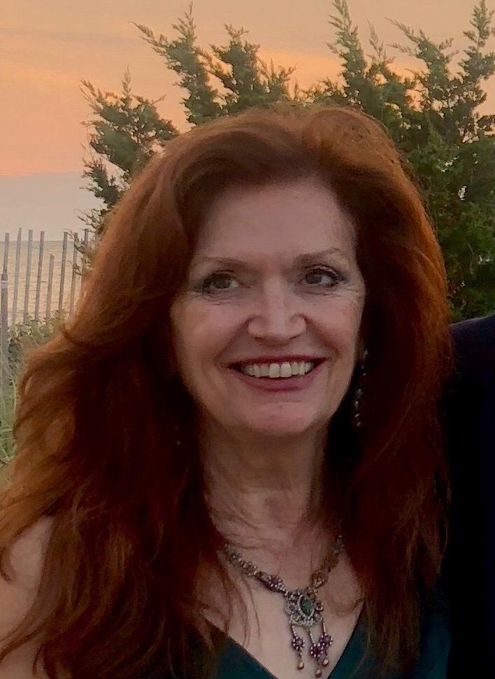

Guide To The April 6th Ballot: Town Meeting Members
What are the Town Meeting Members?
The Town Meeting Members represent the citezens in town meetings.
What do the Town Meeting Members do?
The Town Meeting Members can vote in town meetings and on questions and topic, including, but not limited to, budgets and bylaws.
How many candidates can you vote for?
You can vote for, at most, twelve candidates for the Seats for Re-election, and one candidate at most for each Empty Seat.
Who is Running for Town Meeting Members?
- Seats for Re-election:
- Jennifer G. Ausrotas (Incumbent)

- Jessica Bennett (Incumbent)

- Peter J. Dizikez (Incumbent)

- Mary T.W. Gavin (Incumbent)

- Henry McFarlan Ogilby (Incumbent)

- Emma L. Thurston (Incumbent)

- Stephen Tomczyk (Incumbent)

- John J. Weis (Incumbent)

- Kimberly Niccole Haley

- Dawn MacKerron

- Daniel J. O'Connell

- Empty Seat:
- Christopher Grande

- Seats for Re-election:
- Leslie J. Aitken (Incumbent)

- W. Sumner Brown (Incumbent)

- John J. Buckley (Incumbent)

- Susan E. Burgess-Cox (Incumbent)

- Thomas Caputo (Incumbent)
- David C. Hurley (Incumbent)

- Judith A. McSwain (Incumbent)

- Meghan A. Moriarty (Incumbent)

- Karnig G. Ostayan (Incumbent)

- Suzanne H. Robotham (Incumbent

- Lydia LW Kogler

- Barry Lubarsky

- Empty Seat 1:
- William Musserian

- Empty Seat 2:
- Deran M. Muckjian

- Joeseph John Bernard (Incumbent)

- Bonnie L. Friedman (Incumbent)

- Shaun A. Goho (Incumbent)

- Richard P. Hartley (Incumbent)

- Juliet Blau Jenkins (Incumbent)

- Mary K. Kennedy (Incumbent)

- Robert V. Kennedy (Incumbent)

- Vincent P. Stanton JR. (Incumbent)

- Carole Williams (Incumbent)

- Michelle A. Young (Incumbent)

- Adeshina Ayodeji Baptista

- Jason Ketola

- Norah C. Piehl

- Sami S. Baghdady (Incumbent)

- Debra Deutsch (Incumbent)

- Lucia E. Gates (Incumbent)

- Linda DeVito Ghilardi (Incumbent)

- Jirair M. Hovespian (Incumbent)

- Gitanjali Rege (Incumbent)

- Elizabeth B. Schmidt (Incumbent)

- Daniell G. Stevens (Incumbent)

- David M. Webster (Incumbent)

- Dana Harrington

- Anne B. Mahon
- Michael Anthony Palomo

- Claus Christian Becker (Incumbent)

- Suzanne W. Bloore (Incumbent)

- David Coleman (Incumbent)

- Thayer Donham (Incumbent)

- Howard Mark Fine (Incumbent)

- Timothy Flood (Incumbent)
- Raymond J. Johnson (Incumbent)

- Tommasina Anne Olson (Incumbent)

- Casey Claire Williams (Incumbent)

- Roger P. Wrubel (Incumbent)

- Jessica J. Barnard

- Sarah M. Bilodeau

- Matthew Gasbarro

- Norma Massarotti

- Kathleen M. Rushe

- John Joseph Bowe (Incumbent)

- Theodore Dukas (Incumbent)

- Judith F. Feinleib (Incumbent)

- Laurie A. Graham (Incumbent)

- Gail S. Mann (Incumbent)

- Aaron B. Pikcilingis (Incumbent)

- Robert P. Reardon (Incumbent)

- Joel M. Semuels (Incumbent)

- Judith R. Singler (Incumbent)

- Philip K. Thayer (Incumbent)

- Peter A. Whitmer (Incumbent)

- Stephen A. Evans

- Elshad G. Kasumov

- Linda N. Oates

- Marie Virginia Warner

- Richard A. "Nick" Candee (Incumbent)

- Joan A. Drevins (Incumbent)

- Elizabeth A. Goss (Incumbent)

- Geoffrey George Lubien (Incumbent)

- Stephen Richard Pinkerton (Incumbent)

- Alexandra E. Van Geel (Incumbent)

- Glenn Patrick Wong (Incumbent)

- Mary-Ellen Oberhouser

- William Trabilcy

- Seats for Re-election:
- Kathleen M. Baskin (Incumbent)

- Kevin P. Brosnan (Incumbent)

- Laura S. Caputo (Incumbent)

- Anthony A. Ferrante (Incumbent)

- Donald H. Mercier (Incumbent)

- Patrick K. Murphy IV (Incumbent)

- David T. Nuscher (Incumbent)

- Lynn Peterson Read (Incumbent)

- Ellen J. Sugarman

- David J. DeMarco

- Sharon L. DeMarco

- Mark Kagan

- Empty Seat:
- Allison V. Lenk